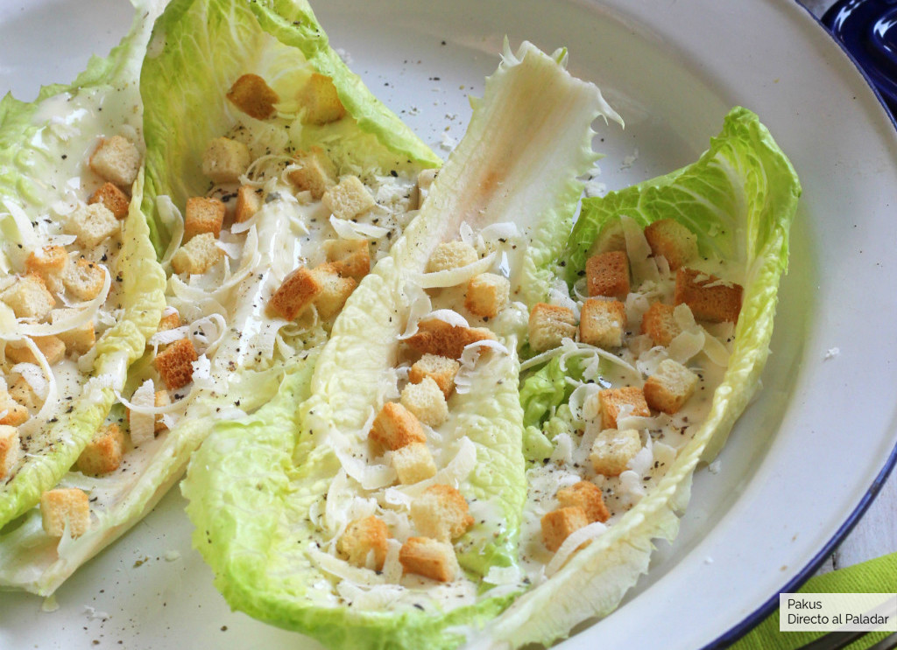

Como hacer una Ensalada Cesar

Ingredientes para 4 personas:
- 8 Hojas de lechuga tipo romana
- Queso Parmesano
- 1 Cucharada sopera de Vinagre de manzana
- 1 Cucharada de Salsa Perrins
- 60 ml de Aceite de oliva
- 1 Cucharada sopera de Jugo de limón
- Tacos de pan frito
- 1 Llema de huevo
- 1 Diente de ajo
Preparación:
- Prepararamos primero los picatostes caseros. Para ello calentamos el horno a 180º. Mientras se calienta, frotamos el pan con un diente de ajo y lo cortamos en dados. Aliñamos el pan con un poco de aceite de oliva y los horneamos durante 5 minutos hasta que estén dorados.
- Para hacer el aliño o salsa César, hacemos puré el diente de ajo que habíamos usado para frotar el pan y lo mezclamos con el aceite, la salsa Perrins, el zumo de limón, una cucharada de vinagre y la yema de huevo. Batimos bien hasta emulsionar y lo reservamos. Como podéis ver, en la salsa original, no se utilizan anchoas, pero sí en la salsa de la ensalada César moderna con pollo.
- Lavamos y secamos las hojas de lechuga romana y las salpimentamos con esmero. Después echamos el aliño o salsa César por encima de las barcas u hojas de lechuga romana. Completamos rellenando las hojas con algunos picatostes y rallamos en el momento el queso parmesano por encima para que sea bien visible.